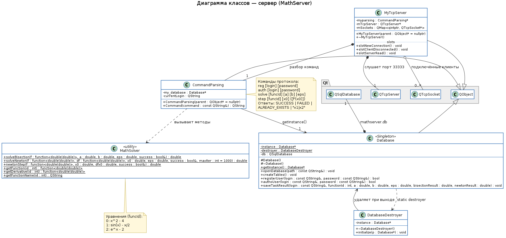
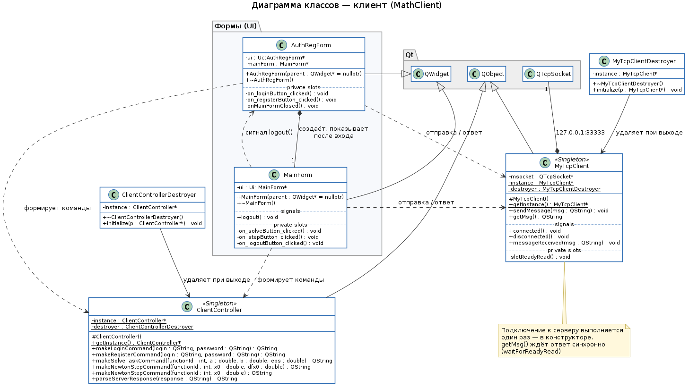
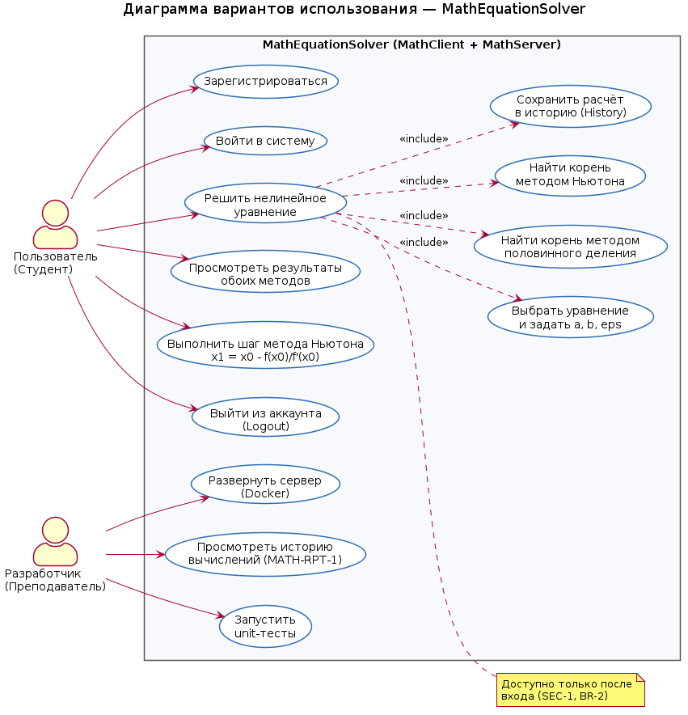

- Создано системой
 1.18.0
1.18.0
|
MathEquationSolver 1.0
Решение нелинейных уравнений: клиент-сервер на Qt
|
Клиент-серверная система для численного решения нелинейных уравнений методом половинного деления и методом Ньютона. Требования описаны в docs/Спецификация.docx.
| Проект | Назначение |
|---|---|
| MathServer | Консольный TCP-сервер (порт 33333): вычисления и база данных SQLite |
| MathClient | Графический клиент на Qt Widgets: вход, регистрация, ввод параметров |
| MathServerTests | Unit-тесты класса MathSolver (QTest) |
| MathClientTests | Unit-тесты класса ClientController (QTest) |
Основные классы сервера: MyTcpServer, CommandParsing, Database, MathSolver. Основные классы клиента: AuthRegForm, MainForm, ClientController, MyTcpClient.
| Запрос клиента | Ответ сервера |
|---|---|
| reg <login> <password> | SUCCESS / ALREADY_EXISTS |
| auth <login> <password> | SUCCESS / FAILED |
| solve <funcId> <a> <b> <eps> | <бисекция>|<Ньютон>, например 2.000122|2.000000 |
| step <funcId> <x0> [<f'(x0)>] | x1 = x0 − f(x0)/f'(x0), например 2.166667 |
Если метод не сошёлся, вместо числа возвращается FAILED.
| funcId | Уравнение |
|---|---|
| 0 | x^2 - 4 |
| 1 | sin(x) - x/2 |
| 2 | e^x - 2 |



Дефекты, найденные при тестировании, отмечены в коде тегом @bug и собраны на странице «Список ошибок». Подробные карточки — в Testing_MathSolver_Real.xlsx.